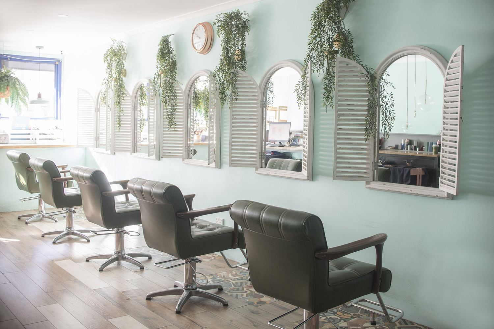
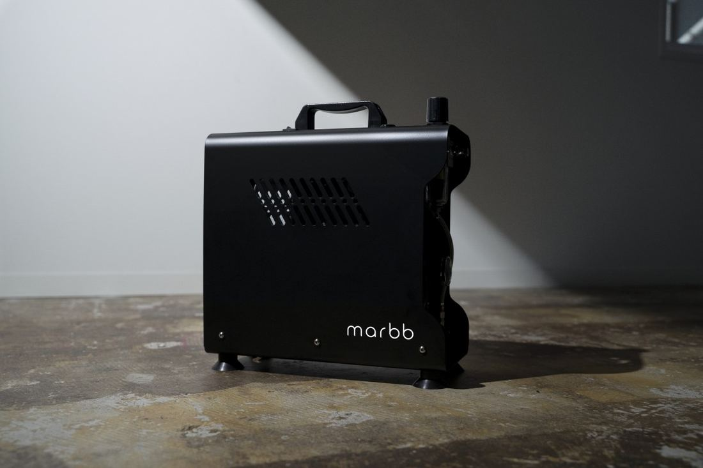

Chatswood のヘアサロン ・ 2016年から
流行より、
あなたに本当に必要な
ヘアスタイルを。
ponoco という名前には「自然のあるべき姿」「調和」「さわやかな風」の意味を込めています。

ponoco の5つのこだわり
技術・品質・艶髪・癒し・安心
01

マイクロバブル
上質なヘアケアは、頭皮から。
薬剤を使うすべてのメニューで、marbb（マーブ）の超微細な泡のシャンプーを使います。皮脂汚れや、髪に残ったシャンプー・シリコンを洗い流します。
- 1/2000炭酸の泡と比べた、泡の大きさ
- 35%乾かす時間の短縮（目安）
Manager / Director Stylist
Kazuho
この業界に20年以上携わっています。お客様に居心地の良い時間を提供することを心がけ、細部にまで丁寧に気を配ります。得意は、時代に左右されない似合わせのカットです。
スタイリストは全員、経験15年以上です。
FAQ
よくいただくご質問。
予約は必要ですか。
完全予約制ではありませんが、少人数で営業しているため、ご来店前の予約をおすすめしています。週末や、平日の午前・夕方は埋まりやすいので、数週間前のご予約が安心です。
希望のスタイルが決まっていなくても大丈夫ですか。
はい、大丈夫です。担当者がご相談にのります。イメージに近い写真を3つほどお持ちいただくと、お好みを汲み取りやすくなります。
キャンセル料はかかりますか。
ご予約の48時間前にリマインダーメールをお送りします。24時間以内のキャンセルは、ご予約内容の料金の50%をいただきます。
カードは使えますか。駐車場はありますか。
Visa、Mastercard、American Express などが使えます（手数料1.5%）。専用の駐車場はないため、お近くの駐車場か路上のパーキングをご利用ください。
あなたの新しいヘアスタイルを、
ponoco でお待ちしています。
- 営業時間
- 年中無休 10:00 – 19:00